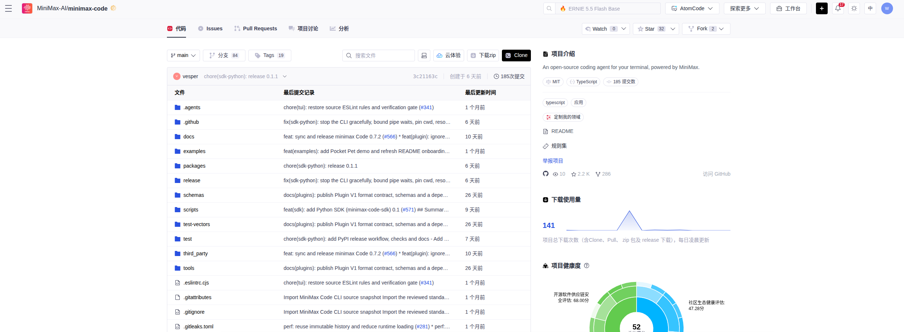
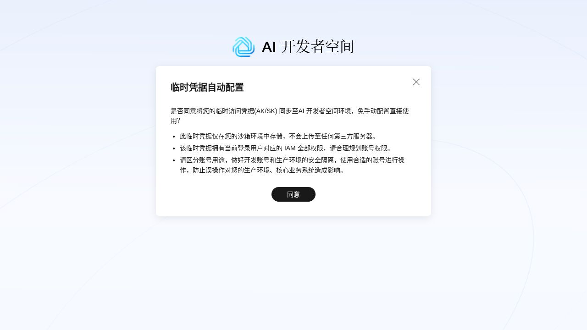
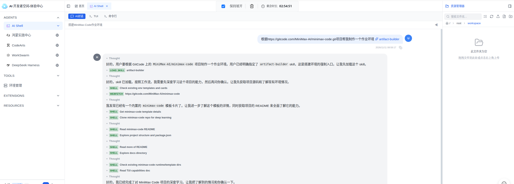
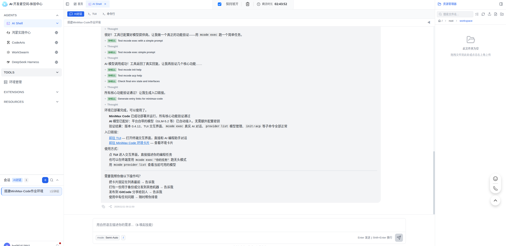
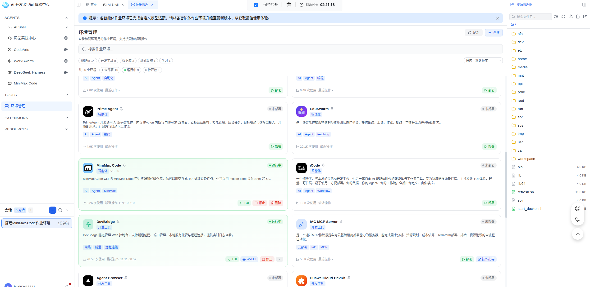
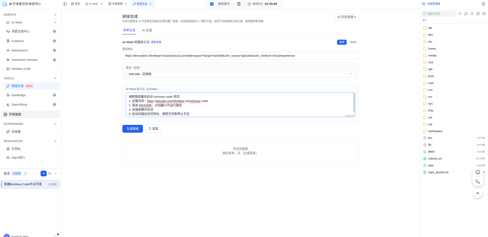
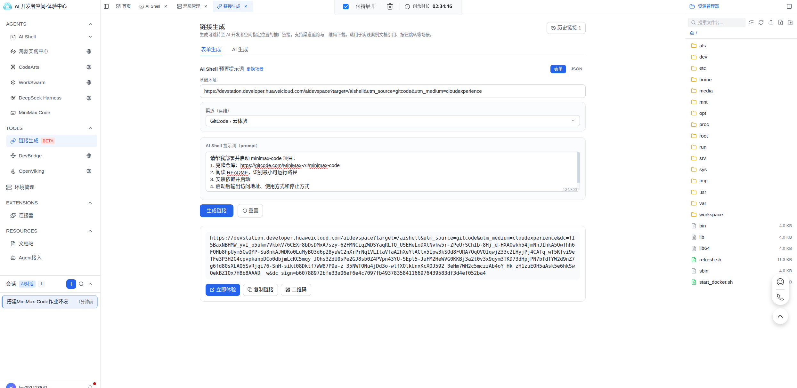
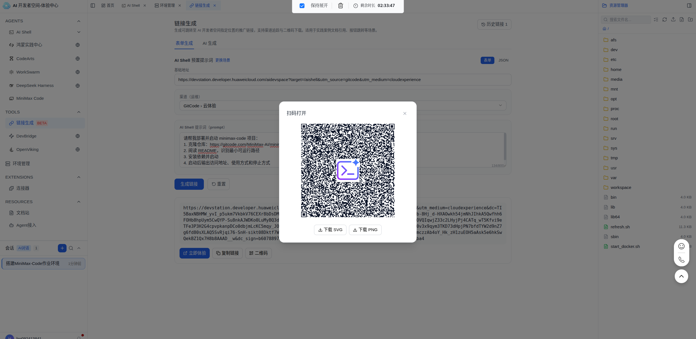

从 GitCode 仓库跳转到 AI 开发者空间部署开源项目
从 minimax-code 的 GitCode 仓库页到 Agent 开始部署，用户只做三件事：点「云体验」、登录、确认发送。克隆仓库、读 README、装依赖和启动服务都不用自己敲；这些动作被压缩成一条预置提示词，随 URL2ENV 深链一起落进 AI Shell。
适合人群：开源项目维护者、运营、想让人一键试跑项目的开发者 预计时间：15 分钟 前置条件：GitCode 账号 + 华为云账号
一先认识 minimax-code 和「云体验」
minimax-code 是 MiniMax-AI 开源在 GitCode 上的项目。这里不展开项目本身，只验证最容易被文档遗漏的问题：新用户拿到一个仓库链接后，能不能在短时间内部署出一个可访问的运行现场。
「云体验」看起来只是仓库页上的一个入口，实际由 URL2ENV 深链驱动：进哪个界面、预置什么提示词、要不要立即发送，都编在链接里。我把这次体验的验收边界定成三条：
- 从仓库页点进去，不经过任何配置界面；
- 落地就是 AI Shell，提示词已经填好，用户不用再描述任务；
- 用户第一件事是确认执行，而不是先学平台怎么用。
后面会分两段记录：第五节先走观众路径，第六节回到「链接生成」界面，看怎么给自己的仓库做出同款链接。

二以前的做法：给个仓库地址，剩下自己来
只发仓库地址和 README，读者就会先面对一台空的通用工作台。项目不在这里，任务也不在这里；下一步是什么，完全靠读者自己判断。
克隆、读文档、装依赖、找启动命令，这些动作单独看都不难。但一个只想试跑项目的人，可能要读完整套上下文才知道第一个命令该敲什么。命令能跑通还好，卡住时就更难分清是依赖问题、运行时问题，还是文档漏了步骤。
三URL 即环境带来的变化：从读文档到跑环境
「云体验」背后的能力来自 AI 开发者空间的「链接生成」。链接不是简单指向工作台，而是把环境上下文带到 URL 里：落点是 AI Shell，任务是一段完整的部署提示词，发送方式由模式决定。这类链接叫 URL 即环境（URL to ENV）。
链接编码前是一份配置，签名后变成可点、可扫码的 URL。落到读者面前时，仓库地址变成了已经准备好的会话：
| 环节 | 没有深链 | 有深链 |
|---|---|---|
| 进入时要做的判断 | 读 README、找 clone 地址、猜启动方式 | 没有，提示词已经替你写好 |
| 要执行的命令 | 克隆、安装、启动，一条条敲 | 确认后 Agent 替你执行 |
| 要理解的概念 | 环境管理、依赖安装、启动脚本 | 只需要知道自己来试 minimax-code |
| 等待 | 散在几次尝试之间，看不到进展 | 一次会话内连续执行，过程可见 |
| 卡住时 | 报错信息靠自己排查 | Agent 给出最短修复路径 |
四开始前要确认的几件事
- GitCode 账号：能打开目标仓库，本案例用 MiniMax-AI/minimax-code。
- 华为云账号：已注册即可，用于登录 AI 开发者空间。
- AI Shell 左侧栏能看到 TOOLS → 链接生成（BETA）：做同款链接时需要。看不到说明当前账号没在开放名单里，需要找管理员开通。
五动手体验：从仓库页点一次「云体验」
还没登录过开发者空间的话，会先跳登录，登录完自动回到 AI Shell。
1打开仓库页，点「云体验」
位置在仓库页右上角。按钮会新开一个标签页。
2按提示登录华为云账号
首次进入会先完成环境初始化；弹出「临时凭据自动配置」时点「同意」，环境会免手工配置 AK/SK。

看到工作台界面，左侧有 AGENTS / TOOLS / EXTENSIONS 侧边栏。
3AI Shell自动创建

4等 Agent 执行部署
Agent 按提示词执行，过程和报错都在会话里可见。

5看部署结果
跑完会输出访问地址、使用方式和停止方式。如果失败，Agent 会先给最短修复路径，而不是停在报错信息上。

得到明确的运行结果（访问地址或运行状态）。
六给自己的仓库做一条这样的链接
从开发者空间的 AI Shell 打开左侧栏 TOOLS → 链接生成（BETA）。三种场景对应三种落地方式：
| 场景 | 落地效果 | 用在哪 |
|---|---|---|
| AI Shell 预置提示词 | 打开 AI Shell，把写好的提示词填进去，默认不自动发送 | 本案例走这条 |
| 作业环境 | 打开指定作业环境的命令行或网页界面 | 目标环境已经存在时 |
| 自定义 | 进容器前先跑几条命令，再开端口或预置提示词 | 需要先把服务拉起来 |
1选「AI Shell 预置提示词」场景
基础地址自动填好，不用改。

2填提示词，按「目标 + 分步 + 交付物」写
给 Agent 的提示词要像启动脚本，不要写成项目介绍。本案例用的原文：
请帮我部署并启动 minimax-code 项目：
1. 克隆仓库：https://gitcode.com/MiniMax-AI/minimax-code
2. 阅读 README，识别最小可运行路径
3. 安装依赖并启动
4. 启动后输出访问地址、使用方式和停止方式更复杂的项目可以用这个模板，把仓库上下文固定得更完整：
目标：在当前 AI 开发者空间中部署并启动该仓库的最小可运行版本。
仓库信息：
- 仓库地址：<repo_url>
- 分支或 Tag：<branch_or_tag>
- 项目类型：<project_type>
执行步骤：
1. 阅读 README、启动脚本和依赖配置，识别最小运行路径。
2. 检查运行时版本、依赖管理工具和端口占用。
3. 安装依赖。
4. 使用项目自带命令启动服务。
5. 服务启动后，输出访问地址、默认账号说明和停止方式。
约束：
- 不要修改业务代码。
- 不要引入仓库未声明的重依赖。
- 如果失败，先给出最短修复路径。
- 如果必须配置密钥，只输出字段名，不要求用户粘贴真实密钥。提示词里不要放真实密钥。必须配置时只写字段名，并指向 .env.example 或演示模式。
提示词包含仓库地址、执行步骤和预期交付物。
3生成链接，检查链接结构
结果区给出完整链接，下面是立即体验、复制链接、二维码三个按钮。

这条链接有三个关键字段：target=/aishell 决定落点，dc 展开成预置提示词载荷，dc_sign 用来校验载荷有没有被改：
https://devstation.developer.huaweicloud.com/aidevspace?target=/aishell&dc=<预置提示词载荷>&dc_sign=<签名>点「立即体验」能落到预置好提示词的 AI Shell；链接发给同事，对方也能打开同一个执行任务。
4生成二维码
弹窗支持下载 SVG / PNG，适合放进文档、课件或线下物料。

二维码弹窗可正常打开，下载的图片可独立扫码。
七用之前要知道的几件事
- 环境是临时的：体验版顶栏一直显示剩余时长，到点销毁。要留的东西，用户得自己先存出去。
- 链接有效，不等于环境一直在：链接本身长期可用，每次点开都是新容器，重新执行一遍提示词。
- 链接不带登录态：没登录会先跳华为云登录，登录完自动回到这条链接。
- 提示词默认不自动发送：Semi-Auto 模式让用户保留最终确认权。对仓库页这类公共入口来说，这个停顿是必要的。
- 长链接别截断：缺
dc或dc_sign链接就失效，聊天工具常把长链接折成省略号。
八常见问题
| 现象 | 原因 | 处理 |
|---|---|---|
| 点开落在通用工作台 | 这条是普通链接，不是深链 | 用带 target=/aishell&dc= 的链接 |
| AI Shell 输入框是空的 | 提示词没填进链接，或链接被截断 | 回链接生成页重新生成并完整复制 |
| Agent 停在某一步不动 | 依赖安装或启动失败 | 看会话输出；超过两分钟没动就重新点链接，会分配新环境 |
| 提示体验结束 | 体验时长用完，环境已释放 | 重新点链接拿新环境；成果要提前保存出去 |
| 生成的链接打不开 | 链接被截断，缺 dc 或 dc_sign |
重新完整复制 |
| 二维码扫不出来 | 截图或压缩导致码点丢失 | 下载原始 PNG 再投放 |
九相关资源
- GitCode 体验入口：gitcode.com/MiniMax-AI/minimax-code
- AI 开发者空间体验版：devstation.developer.huaweicloud.com/aidevspace
- 链接生成入口：AI 开发者空间 → TOOLS → 链接生成 → AI Shell 预置提示词